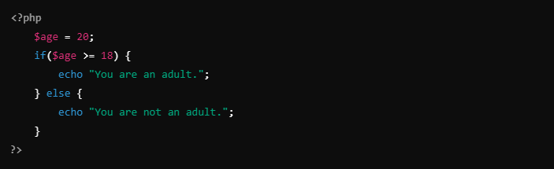
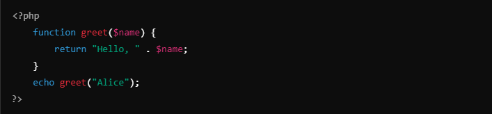
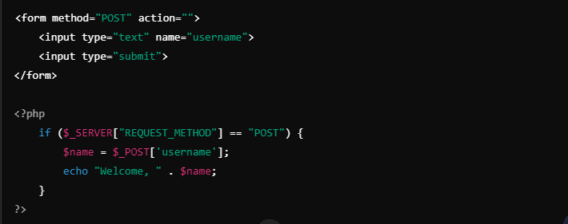
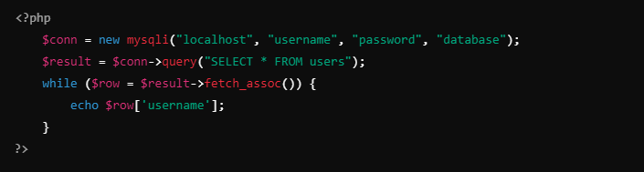

Understanding PHP
by Michael John Antone

PHP Fundamentals: A Quick Guide
PHP (Hypertext Preprocessor) is a widely-used server-side scripting language , particularly popular for web development. It’s embedded in HTML and enables dynamic website functionality. Here’s a quick rundown of PHP basics.
How PHP Works
PHP scripts run on the server and generate HTML that is sent to the browser. The PHP code is invisible to users, offering security and flexibility.
This simple script outputs the classic "Hello, World!" in the browser.
Variables and Data Types
PHP variables start with a $ sign and are loosely typed, meaning you don’t need to define the variable type explicitly. PHP supports types like:
- Strings: $text = "Hello!";
- Integers: $number = 5;
- Booleans: $isTrue = true;
Control Structures
PHP supports control structures like if-else, for, while, and switch. These help in decision-making and repeating tasks.
example using if :
Functions
Functions in PHP are blocks of code designed to perform a task. They can accept parameters and return values.
Forms and Data Handling
PHP works seamlessly with HTML forms. You can use PHP to capture form data via $_GET or $_POST.
Database Integration
PHP easily connects with databases like MySQL to store and retrieve data. Using mysqli or PDO, you can perform CRUD (Create, Read, Update, Delete) operations.
Conclusion
PHP is a versatile language with a relatively simple syntax, making it a go-to choice for web developers. Mastering PHP allows you to build dynamic, data-driven websites.
Happy coding!